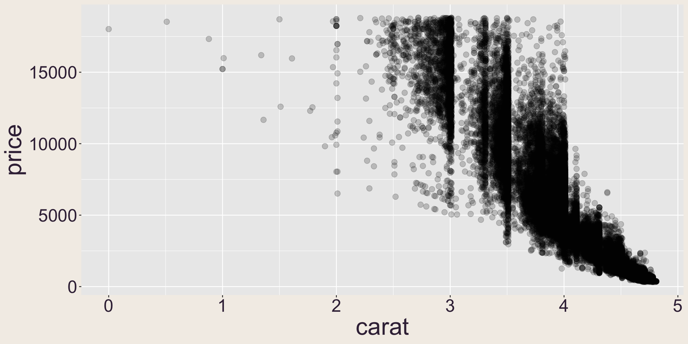
Simon Couch
uRos 2026
https://github.com/simonpcouch/uros-26
table(forested$forested)#> Yes No #> 3894 3213
mean(forested$forested == "Yes")#> [1] 0.548
About 55% of Washington is forested, based on 7,107 Forest Service survey plots.
d <- dplyr::filter(forested, year == 2025)pct_forested_post_stratified(d)#> # A tibble: 1 × 2 #> pct se #> <dbl> <dbl> #> 1 0.592 0.009
An estimated 59.2% of Washington is forested (SE 0.9%), consistent with the last official figure of 59%.
In the battle between convenience and correctness, convenience is winning.
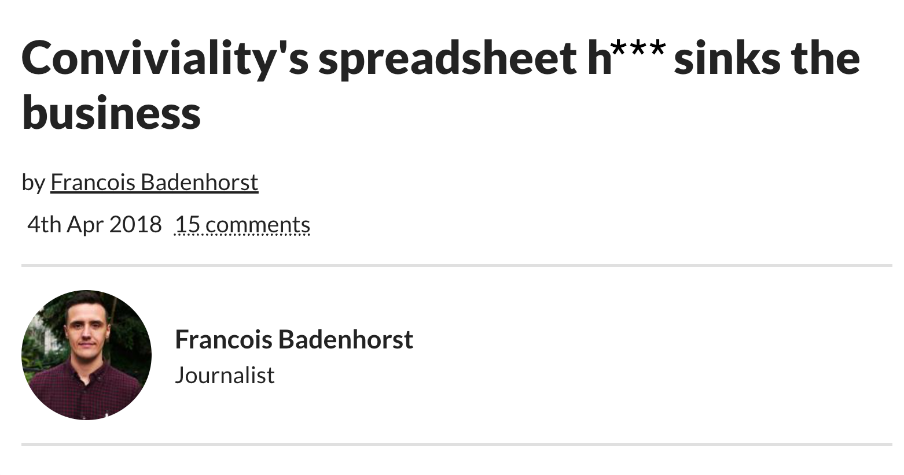
https://www.accountingweb.co.uk/business/management-accounting/convivialitys-spreadsheet-hell-sinks-the-business
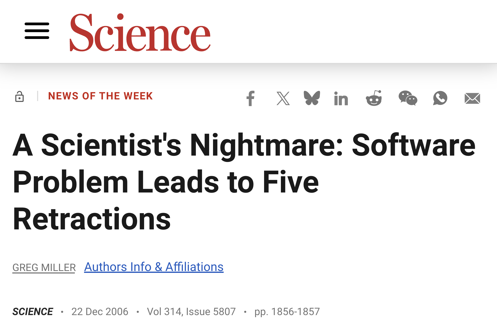
https://www.science.org/doi/10.1126/science.314.5807.1856
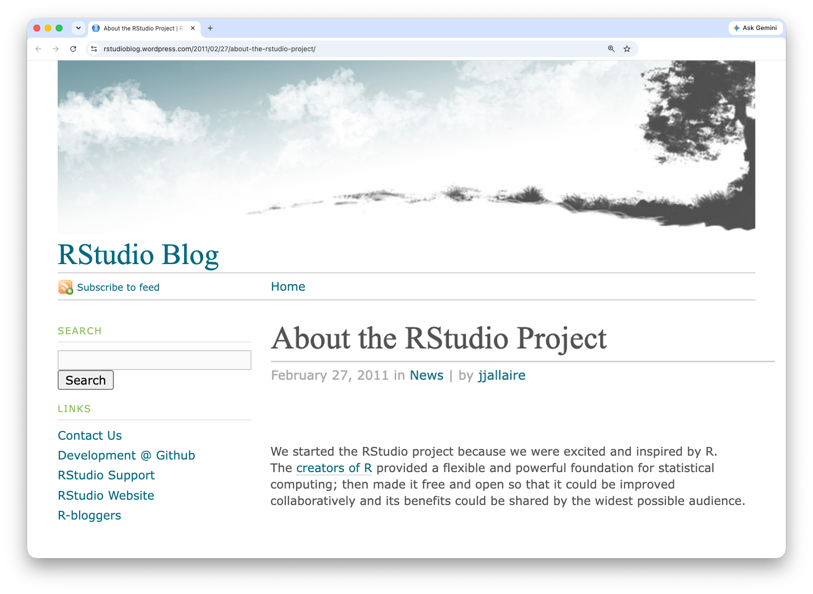
rstudioblog.wordpress.com/2011/02/27/about-the-rstudio-project/
Our goal is to develop a powerful tool that supports trustworthy, high quality analysis.
At the same time, we want RStudio to be as straightforward and intuitive as possible.
https://rstudioblog.wordpress.com/2011/02/28/rstudio-new-open-source-ide-for-r/
simonpcouch.com

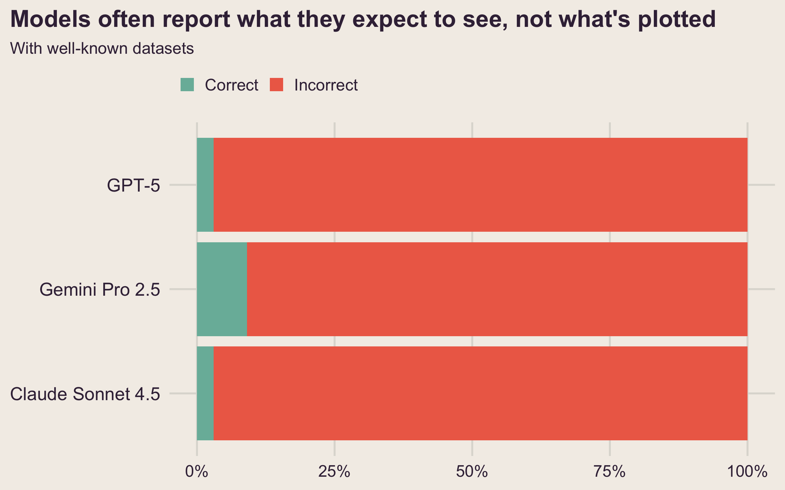
posit-dev.github.io/bluffbench
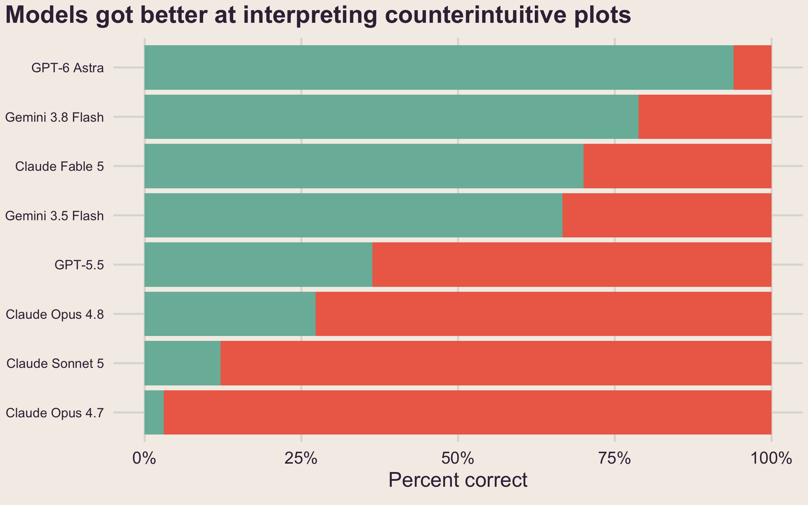
posit-dev.github.io/bluffbench
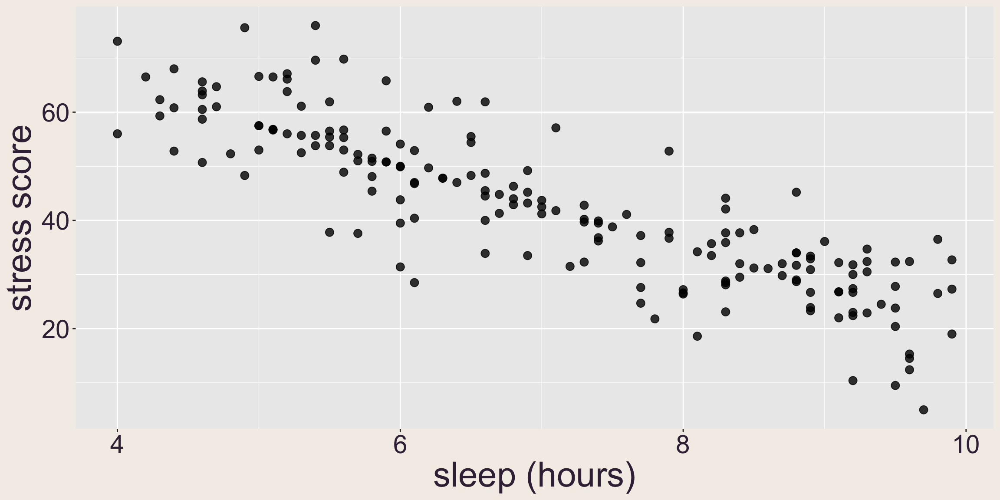
github.com/posit-dev/bluffbench2
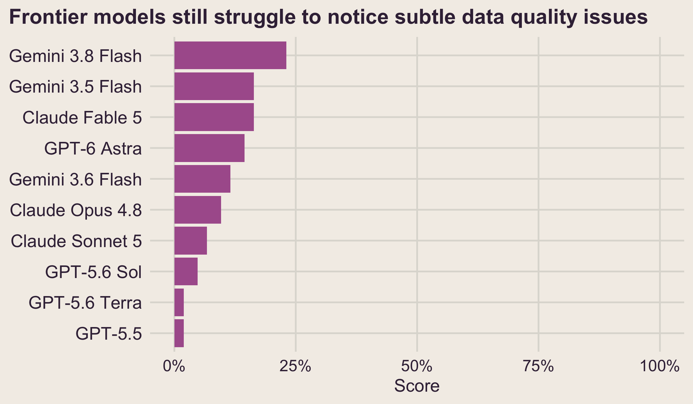
github.com/posit-dev/bluffbench2
Large language models are still meaningfully subhuman on some data science tasks.
Data analysis depends on context that is not in the data.
How do we make AI-involved analysis correct?
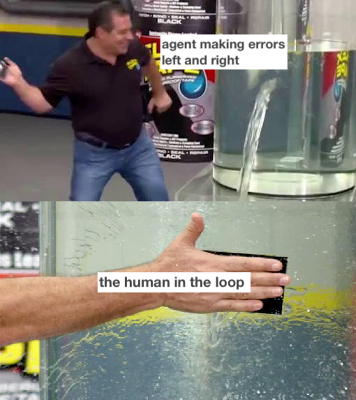
Adding a human does not guarantee a better result.
Vaccaro et al. (2024); Crootof et al. (2023); Anthropic (2026) [1] [2]
People are not fixed safety components.
How do we design the entire system to produce correct work?
Build trust and correctness into the agents themselves
Consider how the agent will interact with the user and support their expertise
Help the agent be correct
Make it less bad when the agent is wrong
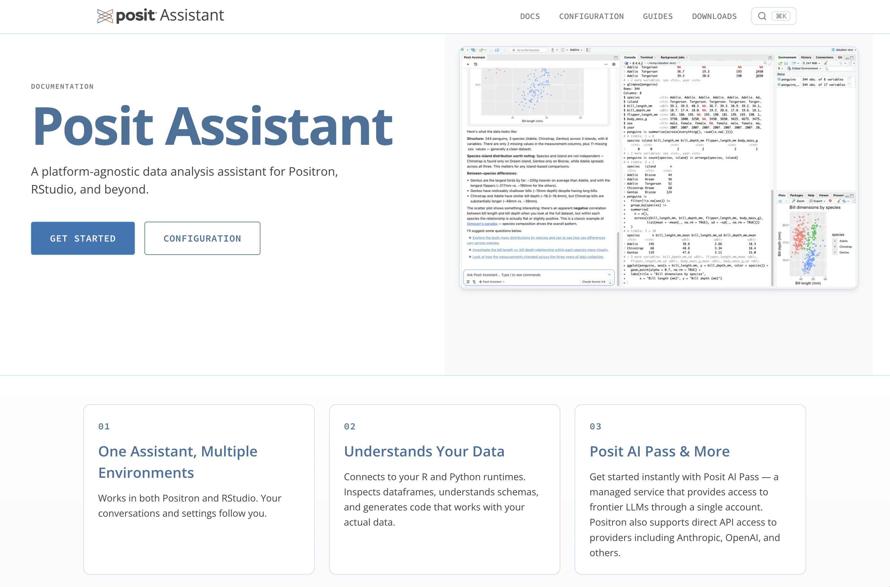
assistant.posit.co
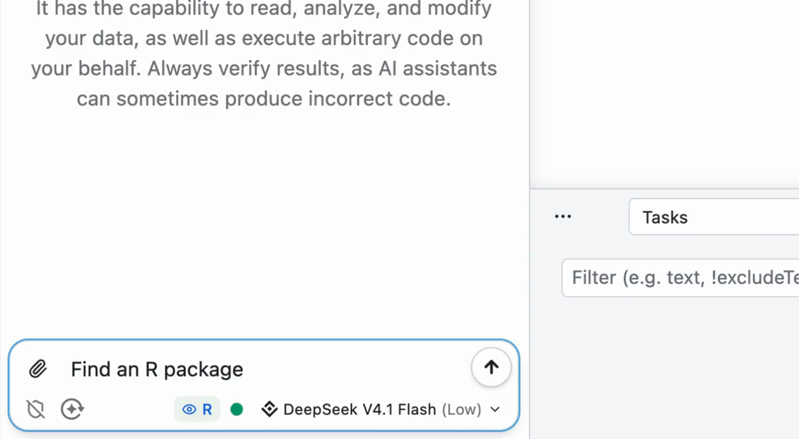
Help the agent be correct by encouraging sound statistics and reproducibility practices
Make it less bad when the agent is wrong by making good use of your expertise and sharing an R/Python environment
table(forested$forested)#> Yes No #> 3894 3213
mean(forested$forested == "Yes")#> [1] 0.548
About 55% of Washington is forested, based on 7,107 Forest Service survey plots.
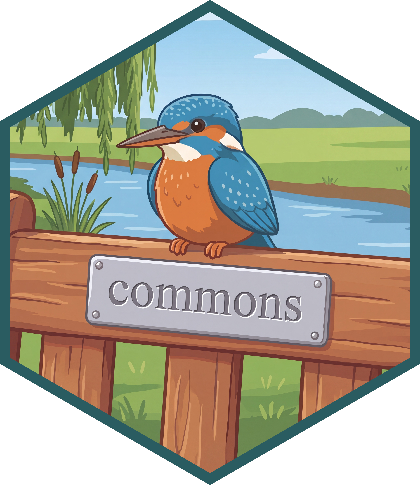
https://pos.it/commons
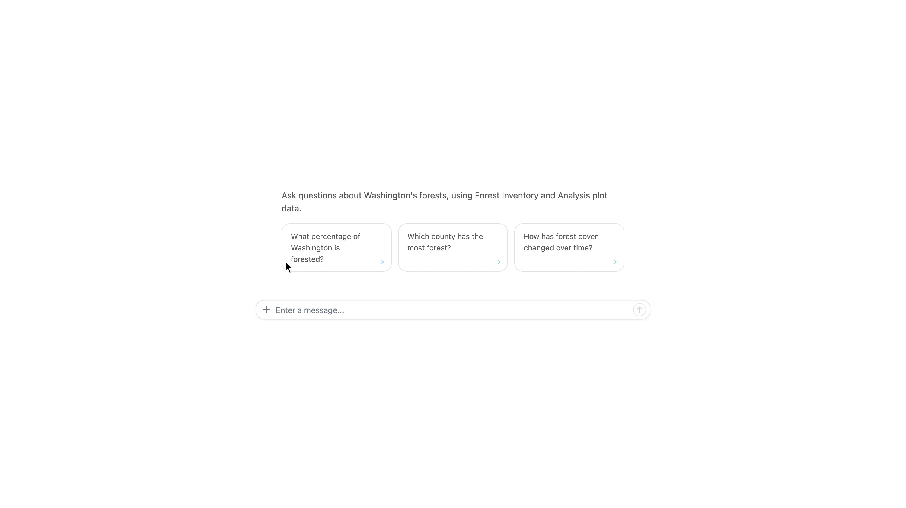
You construct the agent by hooking it up to trusted code.
Your colleagues use the agent deployed on Connect.
You review the agent’s behavior, adding trusted code to cover common use cases.
Help the agent be correct with trusted calculations and context
Make it less bad when the agent is wrong by signaling trust and introducing feedback loops
It’s (still) very bad to be wrong
AI has expanded who can get answers from data.
That changes the infrastructure we need for correct, transparent, and reproducible analysis.